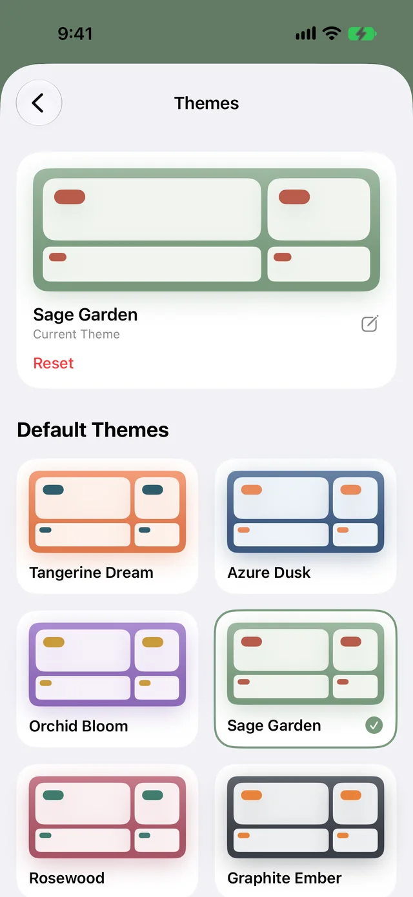
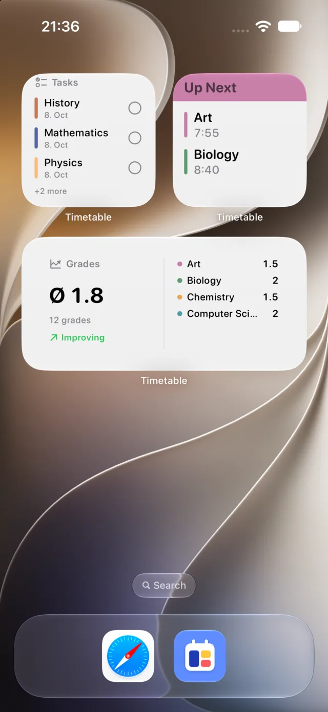

从现成的列表里勾选你的科目，名称和颜色都已设好。然后为每个科目填一次上课时间就行。班上有同学已经做好了课程表？导入文件，几秒钟就能开始用。

作业和测验按截止日期排好。和朋友建个小组，通过 iCloud 共享：有人记下数学作业，所有人的设备上马上就能看到。

支持权重、单科和总平均分以及成绩趋势。发回的试卷可以直接扫描，附到对应成绩上。

选一个现成的主题，或者设计你自己的。

小组件可以显示你的一天、下一节课、任务和成绩。

自由布局的仪表板：课程表、任务和成绩，想怎么排就怎么排。
Timetable Manager 是一款独立开发的 App。我自己找了很久完美的课程表 App，但到处都是锁在付费墙后的专业版功能，让我很烦。所以过去三年里，我自己做了一个。
如果你喜欢这个 App，欢迎在 Ko-fi 上请我喝杯咖啡。这能帮助我继续开发它。
Support me on Ko-fi